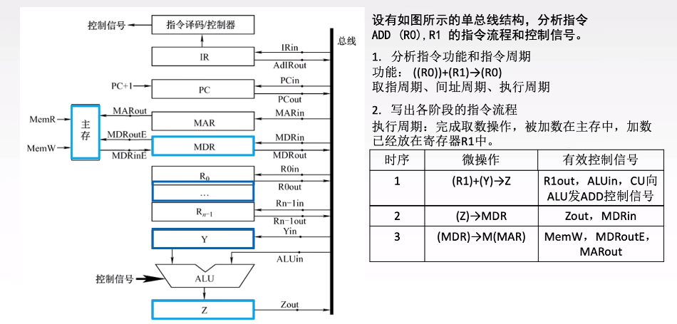
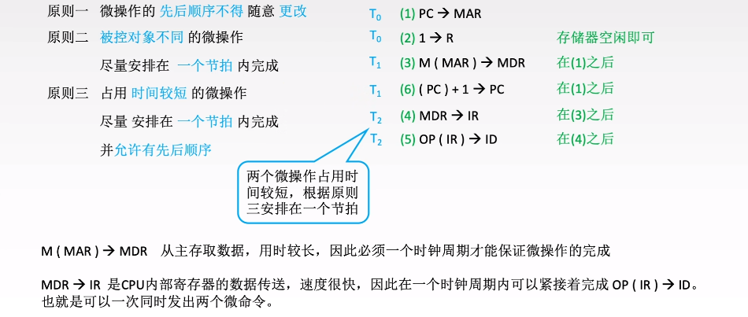
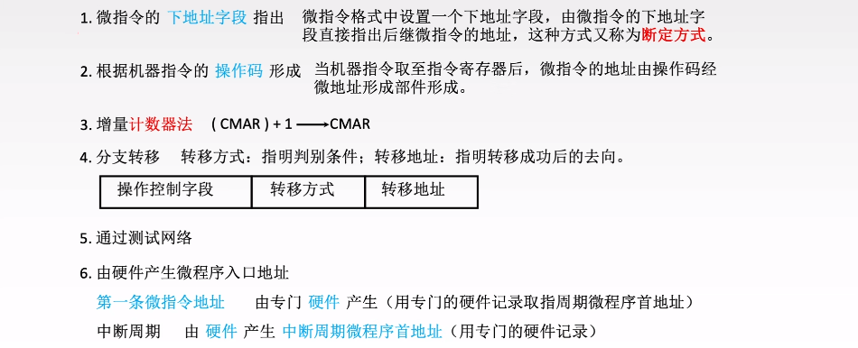
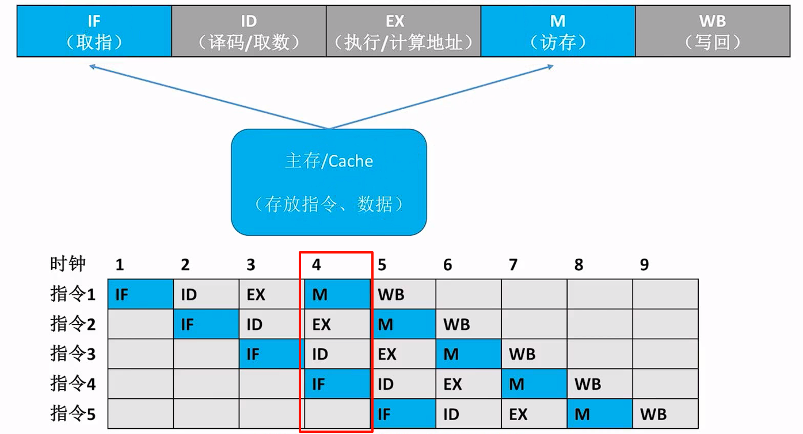
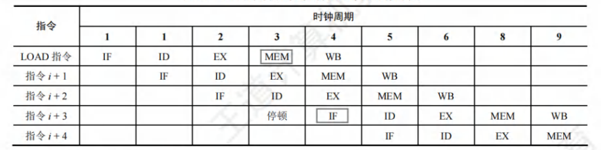
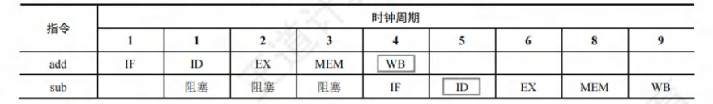
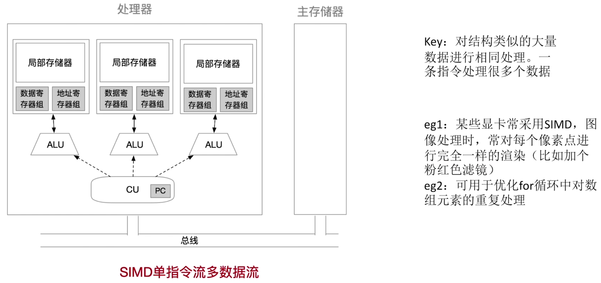

CPU
功能
CPU 的具体功能包括：
- 指令控制：完成取指令（也称取指）、分析指令和执行指令的操作，即程序的顺序控制。
- 操作控制：产生完成一条指令所需的操作信号，把各种操作信号送到相应的部件，从而控制这些部件按指令的要求正确执行。
- 时间控制：严格控制各种操作信号的出现时间、持续时间及出现的时间顺序。
- 数据加工：对数据进行算术和逻辑运算。
- 中断处理：对运行过程中出现的异常情况和中断请求进行处理。
基本结构
运算器
运算器主要功能是根据控制器送来的命令，对数据执行算术运算（加、减、乘、除）、逻辑运算（与、或、非、异或、移位、求补等）或条件测试（用于设置 ZF、SF、OF 和 CF 等标志位，作为条件转移的判断条件）。
运算器主要由以下部分组成：
-
算术逻辑单元(ALU)
-
暂存寄存器
用于暂存从数据总线或通用寄存器送来的操作数，以便在取出下一个操作数时将其同时送入 ALU。暂存寄存器对应用程序员是透明的（不可见）。
-
累加寄存器(ACC)
一个通用寄存器，用于暂时存放 ALU 运算的结果。
-
通用寄存器组(GPRs)
用于存放操作数（包括源操作数、目的操作数及中间结果）和各种地址信息 等，如 AX、BX、CX、DX、SP 等。其位数与机器字长相等，因此便于操作控制。在指令中要指定寄存器的编号，才能明确是对哪个寄存器进行访问。SP 是堆栈指针，用于指示栈顶的地址。
-
程序状态字寄存器(PSW)
每个标志位通常由一位触发器来保存，这些标志位组合在一起称为程序状态字。程序状态字的各位表征程序和机器的运行状态。程序状态字寄存器对用户不透明。
由算术/逻辑运算指令或测试指令的运行结果而建立的各种状态信息，一种是状态标志，如溢出标志(OF)、符号标志(SF)、零标志(ZF)、进位标志(CF)等；另一种是控制标志，如中断标志、陷阱标志等。
-
移位寄存器(SR)
不但可用来存放操作数，而且在控制信号的作用下，寄存器中的数据可根据需要向左或向右移位。
-
计数器(CT)：控制乘除运算的操作步数。
控制器
控制器的全部功能是取指令、分析指令和执行指令，执行指令就是发出有关操作控制信号。
控制器的主要功能是执行指令，每条指令的执行是由控制器发出的一组微操作实现的。
控制器的工作原理是，根据指令操作码、指令的执行步骤（微命令序列）和条件信号来形成当前计算机各部件要用到的控制信号。计算机整机各硬件系统在这些控制信号的控制下协同运行，产生预期的执行结果。控制器是整个系统的指挥中枢，在控制器的控制下，运算器、存储器和输入/输出设备等功能部件构成一个有机的整体，根据指令的要求指挥全机协调工作。
控制器主要由以下部分组成：
- 程序计数器(PC, Program Counter)：用于指出欲执行指令在主存储器中的存放地址。若 PC 和主存储器均按字节编址，则 PC 的位数等于主存储器地址位数。CPU 根据 PC 的内容从主存储器中取指令，然后送入指令寄存器。指令通常是顺序执行的，因此 PC 具有自动加 1 的功能（这里的**“1”是指一条指令的字节数**）；当遇到转移类指令时，PC 的新值由指令计算得到。
- 指令寄存器(IR, Instruction register)：用于保存当前正在执行的指令，IR 的位数等于指令字长。
- 指令译码器(ID, Instruction Decoder)
- 存储器地址寄存器(MAR)：用于存放要访问的主存储器单元的地址，MAR 的位数等于主存储器地址线数，它反映了最多可寻址的存储单元的个数。
- 存储器数据寄存器(MDR)：用于存放向主存储器写入的信息或从主存储器读出的信息，MDR 的位数等于存储字长。当 CPU 和主存储器交换信息时，都要用到 MAR 和 MDR。
- 微操作信号发生器(CU, Control Unit)：产生微操作命令序列
- 时序电路
指令执行过程
指令周期
指令周期：CPU 每取出并执行一条指令所需的全部时间，不同指令的指令周期可能不同。
机器周期是指令执行中每步操作（如取指令、存储器读、存储器写等）所需要的时间，每个机器周期的长度可变。
指令周期通常可用若干机器周期来表示，机器周期又叫 CPU 周期。
一个机器周期又包含若干时钟周期（也称为节拍、T 周期或 CPU 时钟周期，它是 CPU 操作的最基本单位，每个指令周期一定大于或等于一个 CPU 时钟周期）。
Note
总线周期：一次总线操作所需的时间，通常为一个或多个时钟周期。
存取周期：存储器进行一次读或写操作所需的时间称为存储器的读/写时间，而连续启动两次独立的读或写操作（如连续两次读操作）所需的最短时间称为存取周期。机器周期通常由存取周期确定。
Note
时钟脉冲信号的宽度称为时钟周期，时钟周期的倒数为机器主频。
时钟脉冲信号由机器脉冲源发出的脉冲信号经整形和分频后形成，时钟周期以相邻状态单元间组合逻辑电路的最大延迟为基准确定。
每个指令周期内的机器周期数可以不等，每个机器周期内的节拍数也可以不等。
- 对于无条件转移指令
JIMP X，在执行时不需要访问主存，只包含取指阶段（包括取指和分析）和执行阶段，所以其指令周期仅包含取指周期和执行周期。 - 对于间接寻址的指令，为了取操作数，需要先访问一次主存，取出有效地址，然后访问主存，取出操作数，所以还需包括间址周期。间址周期介于取指周期和执行周期之间。
- 当 CPU 采用中断方式实现主机和 I/O 设备的信息交换时，CPU 在每条指令执行结束前，都要发中断查询信号，若有中断请求，则 CPU 进入中断响应阶段，也称中断周期。
指令字长一般都取存储字长的整数倍，若指令字长等于存储字长的 2 倍，则需要两次访存，取指周期等于机器周期的 2 倍；若指令字长等于存储字长，则取指周期等于机器周期。
这样，一个完整的指令周期可包括取指、间址、执行和中断 4 个周期。
- 当 CPU 执行指令时，首先进入取指周期，从 PC 指出的主存单元中取出指令，送至指令寄存器，同时 PC 加“1”以作为下一条指令的地址。当遇到转移指令等改变执行顺序的指令时，在 PC 加“1”后会重新计算并更新 PC 值。
- 然后判断是否有间接寻址，如果有，那么进入间址周期以获取操作数的有效地址。
- 之后进入执行周期，完成取操作数、执行运算和存操作数的任务。
- 执行周期结束后，如果 CPU 检测到中断请求，则进入中断周期，此时需要关中断、保存断点、修改 PC 值为中断服务程序的入口地址，并转向中断服务程序。
CPU 区分指令和数据的依据：指令周期的不同阶段。通常，执行阶段取出的是数据，取值阶段取出的是指令。
指令周期的数据流
取值周期
取指周期的任务是根据 PC 中的内容从主存中取出指令代码并存放在 IR 中。
取指操作是自动进行的，控制器不需要得到相应的指令。
不同长度的指令，其取指操作可能是不同的。例如，双字指令、三字指令与单字指令的取指操作是不同的。
间址周期
间址周期的任务是取操作数有效地址。将指令中的地址码送到 MAR 并送至地址总线，此后 CU 向存储器发出读命令，以获取有效地址并存至 MDR。
Tip
Ad(IR) 表示取出 IR 中存放的指令字的地址字段。
执行周期
执行周期的任务是取操作数，并根据 IR 中的指令字的操作码通过 ALU 操作产生执行结果。
不同指令的执行周期操作不同，因此没有统一的数据流向。
中断周期
中断周期的任务是处理中断请求。
假设程序断点存入堆栈中，并用 SP 指示栈顶地址，而且进栈操作是先修改栈顶指针，后存入数据。
Tip
中断周期中的进栈操作是将 SP 减“1”。这和传统意义上的进栈操作相反，原因是计算机中的堆栈都是向低地址方向增长，所以进栈操作是减“1”而不是加“1”。
指令执行方案
-
单周期处理器
单周期处理器对所有指令都选用相同的执行时间来完成。
此时每条指令都在一个时钟周期内完成（即 CPI = 1），指令之间串行执行，即下一条指令只能在前一条指令执行结束后才能启动。因此，指令周期取决于执行时间最长的指令的执行时间。对于那些本来可以在更短时间内完成的指令，仍要使用这个较长的周期来完成，会降低整个系统的运行速度。
单周期处理器不能使用单总线结构数据通路，因为单总线结构数据通路将所有寄存器的输入/输出端都链接在一条公共通路上，一个时钟周期只允许一次操作，无法完成指令的所有操作。
-
多周期处理器
多周期处理器对不同类型的指令选用不同的执行步骤。
指令需要几个周期就为其分配几个周期，因此可选用不同个数的时钟周期来完成不同指令的执行过程（即 CPI > 1），不再要求所有指令占用相同的执行时间。
多指令周期方案中指令之间仍是串行执行。
-
流水线处理器
流水线处理器采用指令之间并行执行的方案，其追求的目标是力争在每个时钟周期完成一条指令的执行过程（只在理想情况下才能达到该效果，此时 CPI = 1。
这种方案通过在每个时钟周期启动一条指令，尽量让多条指令同时运行，但各自处在不同的执行步骤中。
Tip
单周期 CPU 执行任何指令的时间不一定都会小于多周期 CPU，这取决于单周期 CPU 和多周期 CPU 的时钟周期的长短，以及该指令在多周期 CPU 下所需的时钟周期数。
数据通路
功能
不论 CPU 的内部结构多么复杂，它都可视为由数据通路(Data Path)和控制部件(Control Unit)两大部分组成。
数据通路不包含控制部件。
数据通路：数据在指令执行过程中所经过的路径，包括路径上的部件。ALU、通用寄存器、状态寄存器、Cache、MMU、浮点运算逻辑、异常和中断处理逻辑等都是指令执行时数据流经的部件，都属于数据通路的一部分。数据通路描述了信息从哪里开始，中间经过哪些部件，最后被传送到哪里。
数据通路中数据流动路径由控制部件控制，控制部件根据每条指令功能的不同，生成对数据通路的控制信号。
组成
组成数据通路的元件主要分为组合逻辑元件（操作元件）和时序逻辑元件（状态元件）两类。
组合逻辑元件（操作元件）
组合逻辑元件不含存储信号的记忆单元，任何时刻产生的输出仅取决于当前的输入。组合电路不受时钟信号的控制，输出与输入之间无反馈通路，信号是单向传输的。
数据通路中常用的组合逻辑元件有加法器、算术逻辑单元(ALU)、译码器、多路选择器、三态门等。
时序逻辑元件（状态元件）
任何时刻的输出不仅与该时刻的输入有关，还与该时刻以前的输入有关，因而时序电路必然包含存储信号的记忆单元。此外，时序电路必须在时钟节拍下工作。
各类寄存器和存储器，如通用寄存器组、程序计数器、状态/移位/暂存/锁存寄存器等，都属于时序逻辑元件。
基本结构
数据通路结构直接影响 CPU 内各种信息的传送路径，数据通路不同，指令执行过程的微操作序列的安排也不同，它关系着微操作信号形成部件的设计。
CPU 内部单总线方式
将 ALU 及所有寄存器都连接到一条内部公共总线上，称为单总线结构的数据通路。这种结构比较简单，但数据传输存在较多的冲突现象，性能较低。
Tip
此总线在 CPU 内部，注意不要把它与连接 CPU、存储器和外设的系统总线相混淆。
- 内部总线是指同一部件，如 CPU 内部连接各寄存器及运算部件之间的总线。
- 系统总线是指同一台计算机系统的各部件，如 CPU、内存、通道和各类 I/O 接口间互相连接的总线。
上图中
GPRs 为通用寄存器组，rs、rd 分别为所读、写的通用寄存器的编号；
Y 和 Z 为暂存器；
FR 为标志寄存器，用于存放 ALU 产生的标志信息。
带箭头的虚线表示控制信号，字母加“in”表示该部件允许写入，字母加“out”表示该部件允许输出。MDRin 表示内部总线上信息写入 MDR，MDRout 表示 MDR 的内容送入内部总线。
能输出到总线的部件均通过一个三态门与内部总线相连，用于控制该部件与内部总线之间数据通路的连接与断开。
Tip
在单总线的 CPU 中，ALU 的一个输入端与总线相连，另一个输入端需通过一个寄存器与总线相连。而且输出端也需通过一个暂存器（用来暂存结果的寄存器）与总线相连。
因为 ALU 是一个组合逻辑电路，其运算过程中必须保持两个输入端的内容不变。此外，ALU 的输出端若直接与内部总线相连，则其输出又会通过总线反馈到输入端，影响运算结果。
例题

CPU 内部多总线方式
CPU 内部有两条或更多的总线时，构成双总线结构或多总线结构。将所有寄存器的输入端和输出端都连接到多条公共通路上，相比之下单总线中一个时钟内只允许传送一个数据，因而指令执行效率很低，因此采用多总线方式，同时在多个总线上传送不同的数据，提高效率。
专用数据通路方式
根据指令执行过程中的数据和地址的流动方向安排连接电路，避免使用共享的总线，性能较高，但硬件量大。
控制器
- FE: fetch
- IND: In Direct
- EX: executive
- INT: intrrupt
结构
- 运算器部件通过数据总线与内存储器、输入设备和输出设备传送数据。
- 输入输出设备通过接口电路与总线相连接。
- 内存储器、输入设备和输出设备从地址总线接收地址信息，从控制总线得到控制信号，通过数据总线与其他部件传送数据。
- 控制器部件从数据总线接收指令信息，从运算器部件接收指令转移地址，送出指令地址到地址总线，还要向系统中的部件提供它们运行所需要的控制信号。
功能
控制器是计算机系统的指挥中心，
- 从主存中取出一条指令，并指出下一条指令在主存中的位置。
- 对指令进行译码或测试，产生相应的操作控制信号，以便启动规定的动作。
- 指挥并控制 CPU、主存、输入设备和输出设备之间的数据流动方向。
根据控制器产生微操作控制信号的方式的不同，控制器可分为硬布线控制器和微程序控制器，两类控制器中的 PC 和 IR 是相同的，但确定和表示指令执行步骤的办法及给出控制信号的方案是不同的。
硬布线控制器
硬布线控制器由复杂的组合逻辑门电路和触发器构成，也称组合逻辑控制器，其原理是根据指令的要求、当前的时序及内外部的状态，按时间的顺序发送一系列微操作控制信号。
指令的操作码是决定控制单元 (CU) 发出不同控制信号的关键。为了简化 CU 的逻辑，将存放在 IR 的 n 位操作码经过译码电路产生 2^n^ 个输出，每种操作码对应一个输出送至 CU。
如果将指令译码器和节拍发生器从 CU 中分离出来，便可得到如图所示的简化的控制单元框图。
控制单元（CU）的输入信号来源 如下：
-
经指令译码器译码产生的指令信息
现行指令的操作码决定了不同指令在执行周期所需完成的不同操作，它与时钟配合产生不同的控制信号。
-
时序系统产生的机器周期信号和节拍信号
为了使控制单元按一定的先后顺序、一定的节奏发出各个控制信号，控制单元必须受时钟控制。
-
来自执行单元的反馈信息即标志（次要因素）
控制单元有时需依赖 CPU 当前所处的状态产生控制信号，如 BAN 指令，控制单元要根据上条指令的结果是否为负来产生不同的控制信号。
设计
分析每个阶段的微操作序列
安排微操作时序
取址周期

间址周期
执行周期
电路设计

特点
硬布线控制的功能由逻辑门组合实现，其速度主要取决于电路延迟，因此高速计算机中的关键核心部件 CPU 往往采用硬布线逻辑实现。因此，RISC 一般都选用硬布线控制器。
指令越多，修改、设计、扩充和实现就越困难。
指令系统功能越全，微操作命令就越多，电路也就越庞杂，调试就更困难。
微程序控制器
微程序、微指令、微命令
微程序的设计思想就是将每条机器指令编写成一个微程序，每个微程序包含若干微指令，每条微指令对应一个或几个微操作命令。
因此，执行一条指令的过程就是执行一个微程序的过程，所以一个微程序的周期对应一个指令周期。这些微程序存储在一个控制存储器(CM)中。目前，大多数计算机都采用微程序设计技术。
微指令是若干微命令的集合，一条微指令通常至少包含两大部分信息：
- 操作控制字段，也称微操作码字段，用于产生某一步操作所需的各种操作控制信号。
- 顺序控制字段，也称微地址码字段，用于控制产生下一条要执行的微指令地址。
微周期是指从控制存储器中取出并执行一条微指令所需的全部时间，通常为一个时钟周期。
微命令：在微程序控制的计算机中，控制部件向执行部件发出的各种控制命令或者控制信号称为微命令，它是构成控制序列的最小单位。例如，打开或关闭某个控制门的电位信号、某个寄存器的打入脉冲等。执行部件收到微命令后所进行的操作称为微操作，微命令和微操作是一一对应的。
微命令有相容性和互斥性之分：
- 相容性微命令：指那些可以同时出现、共同完成某一些微操作的微命令；
- 互斥性微命令：指在机器中不允许同时出现的微命令。若同时出现可能会引起总线冲突，也有可能是其他原因。
Tip
硬布线控制器中也有微命令与微操作的概念，并非微程序控制器的专有概念。
微程序和程序是两个不同的概念：
-
程序是指令的有序集合，用于完成特定的功能。
-
微程序是微指令的有序集合，用于描述机器指令，一条指令的功能由一段微程序来实现。
微程序实际上是机器指令的实时解释器，是由计算机设计者事先编制好并存放在控制存储器中的，一般不提供给用户。对于程序员来说，系统中微程序的结构和功能是透明的，无须知道。
程序最终由机器指令组成，并且由软件设计人员事先编制好并存放在主存储器或者辅助存储器中。
Tip
- 主存储器用于存放程序和数据，在 CPU 外部，由 ROM 和 RAM 实现（主要是 RAM） 。
- 控制存储器用于存放微程序，在 CPU 内部，用 ROM 实现。存放微指令的控制存储器的单元地址称为微地址。
结构
工作过程
实际上就是在微程序控制器的控制下计算机执行机器指令的过程，这个过程可描述为：
- 执行取指令公共操作。在机器开始运行时，自动地将取指微程序的入口地址送入 ，并从 CM 中读出相应的微指令并送入 。取指微程序的入口地址一般为 CM 的 0 号单元，取指微程序执行完成后，从主存中取出的机器指令就已存入指令寄存器中。
- 由机器指令的操作码字段通过微地址形成部件产生该机器指令所对应的微程序的入口地址，并送入 。
- 从 CM 中逐条取出对应的微指令并执行。
- 执行完对应于一条机器指令的一个微程序后，又回到取指微程序的入口地址，继续第 1 步，以完成取下一条机器指令的公共操作。
以上是一条机器指令的执行过程，如此周而复始，直到整个程序执行完毕。
原理
微指令设计
微指令的编码方式
直接编码方式
直接编码法无须进行译码，微指令的操作控制字段中每一位都代表一个微命令。
设计微指令时，选用或不选用某个微命令，只要将表示该微命令的对应位设置成 1 或 0 即可。每个微命令对应并控制数据通路中的一个微操作。
- 优点是简单、直观，执行速度快，操作并行性好。
- 缺点是微指令字长过长，n 个微命令就要求微指令的操作字段有 n 位，造成控制存储器容量过大。
字段直接编码方式
将微指令的操作控制字段分成若干小字段，把互斥性微命令放在同一字段中，把相容性微命令放在不同字段中，每个字段独立编码，每种编码代表一个微命令且各字段编码含义单独定义，与其他字段无关。
- 优点是可以缩短微指令字长。
- 缺点是比直接编码方式慢，因为要通过译码电路后再发出微命令。
字段间接编码方式
一个字段的某些微命令需由另一个字段中的某些微命令来解释，由于不是靠字段直接译码发出的微命令，因此称为字段间接编码，也称隐式编码。
这种方式可进一步缩短微指令字长，但因削弱了微指令的并行控制能力，因此通常作为字段直接编码方式的一种辅助手段。
微指令的地址形成方式

Tip
断定法是指在微指令（后继地址字段）中直接明确指出下一条微指令的地址，这样相当于每条都是转移微指令，此外，还有一些其他如条件测试和转移控制字段，也用于控制微指令的寻址。因此，后继微指令地址可由微程序设计者指定，或者根据微指令所规定的转移控制字段控制产生。
微指令格式
一条水平型微指令能定义并执行几种并行的基本操作；而一条垂直型微指令只能定义并执行一种基本操作。
水平型微指令和垂直型微指令的比较如下：
- 水平型微指令并行操作能力强、效率高、灵活性强；垂直型微指令则较差。
- 水平型微指令执行一条指令的时间短；垂直型微指令执行的时间长。
- 用水平型微指令编写的微程序，微指令字较长但微程序短；垂直型微指令正好相反。
- 水平型微指令难以掌握；而垂直型微指令与机器指令比较相似，相对容易掌握。
Tip
垂直型微指令是一种微指令格式，相比于水平型微指令而言的，并不是指令格式垂直表示。
垂直型微指令的特点是在微指令中设置了微操作码字段，结构类似于机器指令格式。
控制信号经过编码产生 是一种控制字段的编码方法，属于水平型微指令，强调并行控制功能是一种控制字段的设计目标，适合水平型微指令而不适合垂直型微指令。
微程序控制单元设计

硬布线与微程序的比较
硬布线控制器需要结合各个微操作的节拍安排，综合分析，写出逻辑表达式，再设计成逻辑电路图，因此时序系统比较复杂；而微程序只需按照节拍的安排，顺序执行微指令，因此时序系统比较简单。
Q&A
- 取指令阶段完成的任务是将现行指令从主存中取出并送至指令寄存器，这个操作是公共的操作，是每条指令都要进行的，与具体的指令无关，所以不需要操作码的控制。
- 微处理器是相对于一些大型处理器而言的，与微程序控制器没有必然联系。不管是采用微程序控制器，还是采用硬布线控制器，微机的 CPU 都是微处理器。
- 无法取代 ，因为它只在微程序中指向下一条微指令地址的寄存器。因此 也必然不可能知道这段微程序执行完毕后下一条是什么指令。
异常和中断
现代计算机中都配有完善的异常和中断处理系统，CPU 的数据通路中有相应的异常检测和响应逻辑，外设接口中有相应的中断请求和控制逻辑，操作系统中有相应的中断服务程序。
这些中断硬件电路和中断服务程序有机结合，共同完成异常和中断的处理过程。
基本概念
由 CPU 内部产生的意外事件被称为异常，也称内中断。异常是 CPU 执行一条指令时，由 CPU 在其内部检测到的、与正在执行的指令相关的同步事件；
由来自 CPU 外部的设备向 CPU 发出的中断请求被称为中断，也称外中断，通常用于信息的输入和输出。中断是一种典型的由外部设备触发的、与当前正在执行的指令无关的异步事件。
异常和中断处理过程的描述如下：
- 若 CPU 在执行用户程序的第 i 条指令时检测到一个异常事件，或者执行第 i 条指令后发现一个中断请求信号，则 CPU 打断当前程序，然后转去执行相应的异常或中断处理程序。即内容异常的响应发生在指令执行过程中。
- 若异常或中断处理程序能够解决相应的问题，则在异常或中断处理程序的最后，CPU 通过执行异常或中断返回指令，回到被打断的用户程序的第 i 条指令或第 i+1 条指令继续执行；若异常或中断处理程序发现是不可恢复的致命错误，则终止用户程序。
通常情况下，对异常和中断的具体处理过程由操作系统（和驱动程序）完成。
异常分类
异常是由 CPU 内部产生的意外事件，分为：
- 硬故障中断：由硬连线出现异常引起的，如存储器校验错、总线错误等。
- 程序性异常：也称软件中断，是指在 CPU 内部因执行指令而引起的异常事件，如整除 0、溢出、断点、单步跟踪、非法指令、栈溢出、地址越界、缺页等。
按异常发生原因和返回方式的不同，可分为故障、自陷和终止。
故障(Fault)
指在引起故障的指令启动后、执行结束前被检测到的异常事件。
例如，
- 指令译码时，出现“非法操作码“或“除数为 0”等；这种情况因为无法通过异常处理程序恢复故障，因此不能回到原断点执行，必须终止进程的执行。
- 取数据时，发生“缺段”，“缺页” 等；这种异常事件经处理后可将所需的段或页面从磁盘调入主存，回到发生故障的指令继续执行，断点为当前发生故障的指令。
自陷(Trap)
自陷也称陷阱或陷入，它是预先安排的一种“异常”事件，就像预先设定的“陷阱”一样。
通常的做法是：事先在程序中用一条特殊指令或通过某种方式设定特殊控制标志来人为设置一个“陷阱”，当执行到被设置了“陷阱”的指令时，CPU 在执行完自陷指令后，自动根据不同“陷阱”类型进行相应的处理，然后返回到自陷指令的下一条指令执行。
Tip
当自陷指令是转移指令时，并不是返回到下一条指令执行，而是返回到转移目标指令执行。
Note
在 x86 机器中，用于程序调试“断点设置”和单步跟踪的功能就是通过陷阱机制实现的。
此外，系统调用指令、条件自陷指令等都属于陷阱指令，执行到这些指令时，无条件或有条件地自动调出操作系统内核程序进行执行。故障异常和自陷异常属于程序性异常（软件中断）。
终止(Abort)
如果在执行指令的过程中发生了使计算机无法继续执行的硬件故障，如控制器出错、存储器校验错、总线错误等，那么程序将无法继续执行，只能终止，此时，调出异常服务程序来重启系统。
这种异常与故障和自陷不同，不是由特定指令产生的，而是随机发生的。
终止异常和外中断属于硬件中断。
中断分类
中断是指来自 CPU 外部、与 CPU 执行指令无关的事件 引起的中断，包括 I/O 设备发出的 I/O 中断（如键盘输入、打印机缺纸等），或发生某种特殊事件（如用户按 Esc 键、定时器计数时间到）等。
外部 I/O 设备通过特定的中断请求信号线向 CPU 提出中断请求，CPU 每执行完一条指令就检查中断请求信号线，如果检测到中断请求，则进入中断响应周期。
中断可分为可屏蔽中断和不可屏蔽中断。
Tip
- 若根据识别中断服务程序地址的方式，可分为向量中断和非向量中断；
- 若根据中断处理过程是否允许被打断，还可分为单重中断和多重中断。
可屏蔽中断
通过可屏蔽中断请求线 INTR 向 CPU 发出的中断请求。
CPU 可以通过在中断控制器中设置相应的屏蔽字来屏蔽它或不屏蔽它，被屏蔽的中断请求将不被送到 CPU。
不可屏蔽中断
通过专门的不可屏蔽中断请求线 NMI 向 CPU 发出的中断请求，通常是非常紧急的硬件故障，如电源掉电等。
这类中断请求信号不可被屏蔽，以让 CPU 快速处理这类紧急事件。
中断和异常联系
中断和异常在本质上是一样的，但它们之间有以下两个重要的不同点：
- “缺页”或“溢出”等异常事件是由特定指令在执行过程中产生的，而中断不和任何指令相关联，也不阻止任何指令的完成。
- 异常的检测由 CPU 自身完成，不必通过外部的某个信号通知 CPU。对于中断，CPU 必须通过中断请求线获取中断源的信息，才能知道哪个设备发生了何种中断。
所有的异常和中断事件都是由硬件检测发现的。
异常和中断响应过程
CPU 执行指令时，如果发生了异常或中断请求，必须进行相应的处理。
从 CPU 检测到异常或中断事件，到调出相应的处理程序，整个过程称为异常和中断响应。
CPU 对异常和中断响应的过程可分为：
-
关中断
在保存断点和程序状态期间，不能被新的中断打断，因此要禁止响应新的中断，即关中断。
通常通过设置“中断允许”(IF)触发器来实现，若 IF 置为 1，则为开中断，表示允许响应中断；若 IF 置为 0，则表示关中断，表示不允许响应中断。
-
保存断点和程序状态
为了能在异常和中断处理后正确返回到被中断的程序继续执行，必须将程序的断点（返回地址）送到栈或特定寄存器中。通常保存在栈中，这是为了支持异常或中断的嵌套。
- “陷阱”类异常的断点为陷阱指令下一条指令的地址
- “故障”类异常的断点为当前发生异常的指令的地址
- 终止”类异常的断点可以是当前指令或下一条指令的地址
- 外部中断的断点是当前刚执行完的指令的地址下一条指令的地址
异常和中断处理后可能还要回到被中断的程序继续执行，被中断时的程序状态字寄存器 PSW 的内容也需要保存在栈或特定寄存器中，在异常和中断返回时恢复到 PSW 中。
-
识别异常和中断并转到相应的处理程序
异常和中断源的识别有软件识别和硬件识别两种方式。
异常和中断源的识别方式不同，异常大多采用软件识别方式，而中断可以采用软件识别方式或硬件识别方式。
- 软件识别方式：指 CPU 设置一个异常状态寄存器，用于记录异常原因。操作系统使用一个统一的异常或中断查询程序，按优先级顺序查询异常状态寄存器，以检测异常和中断类型，先查询到的先被处理，然后转到内核中相应的处理程序。
- 硬件识别方式：也称向量中断，异常或中断处理程序的首地址称为中断向量，所有中断向量都存放在中断向量表中。每个异常或中断都被指定一个中断类型号。在中断向量表中，类型号和中断向量一一对应，因而可以根据类型号快速找到对应的处理程序。
整个响应过程是不可被打断的。中断响应过程结束后，CPU 就从 PC 中取出对应中断服务程序的第一条指令开始执行，直至中断返回，这部分任务是由 CPU 通过执行中断服务程序完成的，整个中断处理过程是由软/硬件协同实现的。
Tip
异常和中断的处理过程基本是相同的，这也是有些教材将两者统称为中断的原因。
但是在有些细节上 CPU 对于异常和中断的响应处理并不一样。例如，检测到中断请求后，CPU 必须通过“中断回答信号启动中断控制器进行中断查询，以确定当前发出的优先级最高的中断请求，并通过数据线获取相应的中断类型号；而对于异常，CPU 无须进行中断回答。
指令流水线
可从两方面提高处理机的并行性：
- 时间上的并行技术：将一个任务分解为几个不同的子阶段，每个子阶段在不同的功能部件上并行执行，以便在同一时刻能够同时执行多个任务，进而提升系统性能，这种方法被称为流水线技术。
- 空间上的并行技术：在一个处理机内设置多个执行相同任务的功能部件，并让这些功能部件并行工作，这样的处理机被称为 超标量处理机。
现代计算机普遍采用指令流水线技术，同一时刻有多条指令在 CPU 的不同功能部件中并发执行，大大提高了功能部件的并行性和程序的执行效率。
Tip
流水 CPU 和多媒体 CPU 无必然联系。多媒体 CPU 是指能够处理多种媒体数据（如图像、音频、视频等）的 CPU，它通常具有特殊的指令集和功能部件，与流水 CPU 的概念不同。
基本概念
一条指令的执行过程可分解为若干阶段，每个阶段由相应的功能部件完成。如果将各阶段视为相应的流水段，则指令的执行过程就构成了一条指令流水线。
流水线各个阶段
假设一条指令的执行过程分为如下 5 个阶段（也称功能段或流水段）：
- 取指(IF, Fetch)：从指令存储器或 Cache 中取指令。
- 译码/读寄存器(ID, Decode)：操作控制器对指令进行译码，同时从寄存器堆中取操作数。
- 执行/计算地址(EX, Execute)：执行运算操作或计算地址。
- 访存(MEM, Memory)：对存储器进行读/写操作，包括修改 PC。
- 写回(WB, Writeback)：将指令执行结果写回寄存器堆。
流水线对指令集的要求
为了利于实现指令流水线，指令集应具有如下特征：
- 指令长度应尽量一致，有利于简化取指令和指令译码操作。否则，取指令所花的时间长短不一，使得取指部件极其复杂，并且也不利于指令译码。
- 指令格式应尽量规整，尽量保证源寄存器的位置相同，有利于在指令未知时就可取寄存器操作数，否则须译码后才能确定指令中各寄存器编号的位置。
- 采用 LOAD/STORE 型指令，其他指令都不能访问存储器，这样可把 LOAD/STORE 指令的地址计算和运算指令的执行步骤规整在同一个周期中，有利于减少操作步骤。
- 数据和指令在存储器中“按边界对齐”存放。这样，有利于减少访存次数，使所需数据在一个流水段内就能从存储器中得到。
流水线的实现
设计原则
在单周期实现中，虽然不是所有指令都必须经历完整的 5 个阶段，但只能以执行速度最慢的指令作为设计其时钟周期的依据，单周期 CPU 的时钟频率取决于数据通路中的最长路径。
流水线设计的原则：
-
指令流水段个数以最复杂指令所用的功能段个数为准；
-
流水段的长度或者流水段时间以最复杂的操作所花的时间为准。
假设某条指令的 5 个阶段所花的时间分别如下：取指：200ps；译码：100ps；执行：150ps：访存：200ps：写回：100ps，串行执行时该指令的总执行时间为 750ps。但若按照流水线设计原则，则每个流水段的长度为 200ps，每条指令的执行时间为 1000ps，反而比串行执行时增加了 250ps。
假设某程序有 N 条指令，单周期处理机所用的时间为 Nx750ps，而流水线处理机所用的时间为(N+4)x200ps。由此可见，流水线方式并不能缩短单条指令的执行时间，但对于整个程序来说执行效率得到了大幅提高。
Note
1,000 ps (皮秒) = 1 ns (纳秒)
1,000,000,000 ns (纳秒) = 1 s (秒)
Tip
指令流水线中每个流水段的时间单位为一个时钟周期。
假设流水段的长度为 200ps，则 CPU 时钟周期为 200ps。若还有其它需要花费的时间也应该加上，例如流水段寄存器延时为 20ps，则此时 CPU 时钟周期为 220ps。
逻辑结构
每个流水段后面都要增加一个流水段寄存器，用于锁存本段处理完的所有数据，以保证本段的执行结果能在下个时钟周期给下一流水段使用。
一条指令会依次进入 IF、ID、EX、MEM、WB 五个功能段进行处理，第一条指令进入 WB 段后，各流水段都包含一条不同的指令，流水线中将同时存在 5 条不同的指令并行执行。
各种寄存器和数据存储器均采用统一时钟 CLK 进行同步，每来一个时钟，各段处理完的数据都将锁存到段尾的流水段寄存器中，作为后段的输入。同时，当前段也会收到前段通过流水段寄存器传递过来的数据。
在某个时钟周期内，不同的流水段受不同指令的控制信号控制，执行不同指令的不同功能段，在指令译码阶段由控制器产生指令各流水段的所有控制信号，分别在随后的各个时钟周期内被使用，因此随后各流水段寄存器都要保存相应的控制信号，并通过流水段寄存器传递到下一个流水段。
Tip
每条指令的取指令阶段和指令译码阶段的功能都相同，是公共流水段，且控制信号是指令译码之后才产生的，因此这两个阶段不需要控制信号。
不同流水段寄存器存放的信息不同，因此流水段寄存器位数不一定相同。
流水段寄存器对用户程序是透明的，用户程序不能通过指令指定访问哪个流水段寄存器。
流水线的表示方法
指令执行过程图
主要用于分析指令执行过程以及影响流水线的因素。
从图看出，理想情况下，每个时钟周期都有一条指令进入流水线，每个时钟周期都有一条指令完成，每条指令的时钟周期数（即 CPI）都为 1。
时空图
在时空图中，横坐标表示时间，它被分割成长度相等的时间段 T；纵坐标为空间，表示当前指令所处的功能部件。
在图中，第一条指令 1 在时刻 0 进入流水线，在时刻 5T 流出流水线。第二条指令 L 在时刻 T 进入流水线，在时刻 6T 流出流水线。以此类推，每隔一个时间 T 就有一条指令进入流水线，从时刻 5T 开始每隔一个时间 T 就有一条指令流出流水线。
从图中可看出，在时刻 10T 时，流水线上便有 6 条指令流出。若采用串行方式执行，在时刻 10T 时，只能执行 2 条指令，可见使用流水线方式成倍地提高了计算机的速度。
只有大量连续任务不断输入流水线，才能充分发挥流水线的性能，而指令的执行正好是连续不断的，非常适合采用流水线技术。对于其他部件级流水线，如浮点运算流水线，同样也仅适合于提升浮点运算密集型应用的性能，对于单个运算是无法提升性能的。
流水线的冒险与处理
在指令流水线中，可能会遇到一些情况使得后续指令无法正确执行而引起流水线阻塞，这种现象称为流水线冒险。
不同类型指令在各流水段的操作是不同。
结构冒险
由不同指令在同一时刻争用同一功能部件而形成的冲突，也称结构冲突 / 资源冲突，即由硬件资源竞争造成的冲突。

例如，指令和数据通常都存放在同一存储器中，在第 4 个时钟周期，第 i 条 LOAD 指令进入 MEM 段时，第 i+3 条指令的 IF 段也要访存取指令，此时会发生访存冲突，为此可在前一条指令访存时，暂停（一个时钟周期）取后一条指令的操作，如图所示。
当然，如果第 i 条指令不是 LOAD 指令，在 MEM 段不访存，也就不会发生访存冲突。

解决办法：
-
前一指令访存时，使后一条相关指令（及其后续指令）阻塞若干个时钟周期，直到不会产生冒险为止。
-
设置多个独立的部件。例如，对于寄存器访问冲突，可将寄存器的读口和写口独立开来；对于访存冲突，单独设置数据存储器和指令存储器。
Tip
在现代 Cache 机制中，L1 级 Cache 通常采用数据 Cache 和指令 Cache 分离的方式，从而也就避免了资源冲突的发生。
数据冒险
数据冒险也称数据相关。
引起数据冒险的原因是，后面指令用到前面指令的结果时，前面指令的结果还没有产生。
在以非乱序执行的流水线中，所有数据冒险都是由于前面指令写结果之前，后面指令就需要读取而造成的，这种数据冒险称为 写后读(ReadAfterWrite, RAW) 冲突。
I1 add R1, R2, R3 # (R2)+(R3)→R1
I2 sub R4, R1, R5 # (R1)-(R5)→R4在写后读（RAW）冲突中，指令 I2 的源操作数是指令 I1 的目的操作数。正常的读/写顺序是由指令 I1 先写入 R1，再由指令 I2 来读 R1。在非流水线中，这种先写后读的顺序是自然维持的。但在流水线中，由于重叠操作，读/写的先后顺序关系发生了变化，如图所示。

Tip
通常分析是否存在数据冒险，只需要从某一条指令开始观察该指令“写”了某个寄存器，并观察后续相邻的 3 条指令是否“读”了同一个寄存器。若发现此类情况，则存在数据冒险。
解决数据冒险的办法：
-
延迟执行相关指令
把遇到数据相关的指令及其后续指令都暂停一至几个时钟周期，直到数据相关问题消失后再继续执行。
可分为软件插入空操作“nop”指令和硬件阻塞(stall)两种方法，确保其 ID 段在”写寄存器指令”的 WB 段之后。
为此，可以暂停 sub 指令 3 个时钟周期，直至前面 add 指令的结果生成，如图所示。

对于 I1 和 I2 的数据相关问题，还可以通过将寄存器的写口和读口分别控制在前、后半个时钟周期内操作，使前半周期写入 R1 的值在后半周期马上被读出，在一个周期内读/写寄存器不会产生冲突，这样 I1 的 WB 段和 I2 的 ID 段就可重叠执行，从而只需延迟 2 个时钟周期。
-
采用转发（旁路）技术
设置相关转发通路，不等前一条指令把计算结果写回寄存器，下一条指令也不再从寄存器读，而将数据通路中生成的中间数据直接转发到 ALU 的输入端。
如图所示，指令 I1 在 EX 段结束时已得到 R1 的新值，被存放到 EX/MEM 流水段寄存器中，因此可以直接从该流水段寄存器中取出数据返送到 ALU 的输入端，这样，在指令 I2 执行时 ALU 中用的就是 R1 的新值。
增加转发通路后，相邻两条运算类指令之间、相隔一条的两个运算类指令之间的数据相关带来的数据冒险问题就都能解决了。
转发（旁路）技术可以解决大部分数据冒险，但不能解决由 Load 指令写寄存器引 起的 Load-use 数据冒险。
-
Load-use 数据冒险的处理
如果 Load 指令与其后紧邻的运算类指令存在数据相关问题（如：Load 指令写某个寄存器，相邻的后一条指令读同一个寄存器），则无法通过转发技术来解决，通常把这种情况称为 Load-use 数据冒险。
对于下列两条指令，Load 指令只有在 MEM 段结束时才能得到主存中的结果，然后送 MEM/WB 流水段寄存器，在 WB 段的前半周期才能存入 R2 的新值，但随后的 add 指令在 EX 阶段就要取 R2 的值，因此，得到的是旧值。
I2 load r2, 12, (r1) # M[(r1)+12]→(r2) I3 add r4, r3, r2 # (r3)+(r2)→(r4)对于 Load-use 数据冒险，最简单的做法是由编译器在 add 指令之前插入一条 nop 指令，这样在 add 指令的 EX 段就可以从 MEM/WB 流水段寄存器中取出 Load 指令的最新结果，如图所示。
当然，最好的办法是在程序编译时进行优化，通过调整指令顺序 以避免出现 load-use 现象。
控制冒险
指令通常是顺序执行的，但当遇到改变指令执行顺序的情况，例如执行转移或返回指令、发生中断或异常时，会改变 PC 值，从而造成断流，也称控制冲突。
对于由转移指令引起的冲突，最简单的处理方法就是推迟后续指令的执行。通常把因流水线阻塞带来的延迟时钟周期数称为延迟损失时间片 。
在下列指令中，假设 R2 存放常数 N，R1 的初值为 1，bne 指令在 EX 段通过计算设置条件码，并在 MEM 段确定是否将 PC 值更新为转移目的地址，因此仅当 bne 指令执行到第 5 个时钟结束时才能将转移目标地址送 PC。
I1 loop:add R1,R1,1 # (R1)+1→R1
I2 bne R1,R2,loop # if(R1)!=(R2) goto loop为此，在数据通路检测到分支指令后，可以在分支指令后插入 （此处 ）条 nop 指令，如图所示。
为什么只需要延后 3 个时钟
控制冒险解决办法：
-
对于由转移指令引起的冲突，可采用和解决数据冲突相同的软件插入“nop”指令 和硬件阻塞(stall) 的方法。
比如，延迟损失多少时间片，就插入多少条 nop 指令。
-
对转移指令进行分支预测，尽早生成转移目标地址。
分支预测分为：
- 静态预测技术：也称静态预测，假定分支总是不发生或者总是发生，每次预测结果是一样的。
- 动态预测技术：根据之前条件跳转的比较结果来预测，根据局部性原理，其预测成功率通常比静态预测技术高。
预测错误时，已被错误放入流水线执行的指令必须被舍弃。
Tip
Cache 缺失的处理过程也会引起流水线阻塞。
Tip
流水段的数量越多，意味着在转移结果确定之前，可能取出更多的错误指令，从而需要更多的时间和资源来处理这些错误指令。即流水段的数量越多，控制冒险引发的开销就越多。
流水线性能指标
吞吐率
流水线的吞吐率是指在单位时间内流水线所完成的任务数量，或输出结果的数量。
流水线吞吐率(TP)的最基本公式为 ， 是任务数， 是处理完 个任务所用的总时间。
在输入流水线中的任务连续的理想情况下，一条 段流水线能在 个时钟周期内完成 个任务，流水线的吞吐率为
连续输入的任务数 时，得最大吞吐率 。
加速比
完成同样一批任务，不使用流水线与使用流水线所用的时间之比。
流水线加速比(S)的基本公式为 ， 表示不使用流水线的总时间， 表示使用流水线的总时间。
一条 段流水线完成 个任务所需的时间为 。顺序执行 个任务时，所需的总时间为 。将 T 和 T 值代入上式，得出流水线的加速比为 。
连续输入的任务数 时，得最大加速比为 。
效率
流水线的设备利用率称为流水线的效率。
在时空图上，流水线的效率定义为完成 n 个任务占用的时空区有效面积与 n 个任务所用的时间与 k 个流水段所围成的时空区总面积之比。
高级流水线技术
超标量流水线技术
也称动态多发射技术，每个时钟周期内可并发多条独立指令，以并行操作方式将两条或多条指令编译并执行，为此需配置多个功能部件和指令译码电路，以及多个寄存器和总线。
在简单的超标量 CPU 中，指令是按顺序发射执行的。为了更好地提高并行性能，多数超标量 CPU 都结合动态流水线调度技术，通过动态分支预测等手段，指令不按顺序执行，这种方式称为乱序执行。
该技术本质上是用空间换时间。
超长指令字技术
也称静态多发射技术，由编译程序挖掘出指令间潜在的并行性，将多条能并行操作的指令组合成一条具有多个操作码字段的超长指令字（可达几百位），为此需要采用多个处理部件。
超流水线技术
流水线功能段划分得越多，时钟周期就越短，指令吞吐率也就越高，因此超流水线技术是通过提高流水线主频的方式来提升流水线性能的。但是，流水线级数越多，用于流水寄存器的开销就越大，因而流水线级数是有限制的，并不是越多越好。
超流水线 CPU 在流水线充满后，每个时钟周期还是执行一条指令，CPI = 1，但其主频更高；
多发射流水线 CPU 每个时钟周期可以处理多条指令，CPI < 1，但其成本更高、控制更复杂。
常见的五类指令执行过程
运算类指令
LOAD 指令
STORE 指令
条件转移指令
无条件转移指令
Q&A
多处理器
多处理器基本概念
基于指令流的数量和数据流的数量，将计算机体系结构分为 SISD、SIMD、MISD 和 MIMD 四类。
常规的单处理器属于 SISD，而常规的多处理器属于 MIMD。
单指令流单数据流(SISD)结构
Single Instruction Single Data stream
特性：各指令序列只能并发、不能并行，每条指令处理一两个数据。不是数据级并行技术。
硬件组成：一个处理器 + 一个主存储器。若采用指令流水线，需设置多个功能部件，采用多模块交叉存储器。
Note
标量流水处理机属于 SISD 结构。
单指令流多数据流(SIMD)结构
Single Instruction Multiple Data
特性：各指令序列只能并发、不能并行，但每条指令可同时处理很多个具有相同特征的数据。是一种数据级并行技术。
硬件组成：一个指令控制部件（CU） + 多个处理单元/执行单元（如 ALU） + 多个局部存储器 + 一个主存储器。每个执行单元有各自的寄存器组、局部存储器、地址寄存器。不同执行单元执行同一条指令，处理不同的数据。

Note
阵列处理器就是属于 SIMD 结构。
多指令流单数据流(MISD)结构
MISD 是指同时执行多条指令，处理同一个数据，实际上不存在这样的计算机。
多指令流多数据流(MIMD)结构
Multiple InstructionStream Multiple Data
特性：各指令序列并行执行，分别处理多个不同的数据。是一种线程级并行、甚至是线程级以上并行技术。
可以分为：
-
多处理器系统
各处理器之间，可以通过 LOAD/STORE 指令，访问同一个主存储器，可通过主存相互传送数据。
一台计算机内，包含多个处理器 + 一个主存储器，一多个处理器共享单一的物理地址空间。
-
多计算机系统
各计算机之间，不能通过 LOAD/STORE 指令直接访问对方的存储器，只能通过“消息传递”相互传送数据。
由多台计算机组成，因此拥有多个处理器 + 多个主存储器。每台计算机拥有各自的私有存储器，物理地址空间相互独立。

向量处理器(SIMD 思想的进阶应用)
特性：一条指令的处理对象是“向量”。擅长对向量型数据并行计算、浮点数运算，常被用于超级计算机中，处理科学研究中巨大运算量
硬件组成：多个处理单元，多组“向量寄存器”。主存储器应采用“多个端口同时读取 ” 的交叉多模块存储器。主存储器大小限定了机器的解题规模，因此要有大容量的、集中式的主存储器。
多核处理器基本概念
多核处理器是指将多个处理单元集成到单个 CPU 中，每个处理单元称为一个核(core)，通常也称片上多处理器。每个核既可以有自己的 Cache，又可以共享同一个 Cache，所有核通常共享主存储器。
双核技术是指将两个一样的 CPU 集成到一个封装内或者直接将两个 CPU 做成一个芯片。
下图是一个不共享 Cache 的双核 CPU 结构。
Tip
多核处理器属于 MIMD 架构。
硬件多线程基本概念
在传统 CPU 中，线程的切换包含一系列开销，频繁地切换会极大影响系统的性能，为了减少线程切换过程中的开销，便诞生了硬件多线程。
在支持硬件多线程的 CPU 中，必须为每个线程提供单独的通用寄存器组、单独的程序计数器等，线程的切换只需激活选中的寄存器，从而省略了与存储器数据交换的环节，大大减少了线程切换的开销。
Tip
硬件多线程技术也可以用于单核处理器。
硬件多线程有 3 种实现方式：
-
细粒度多线程
多个线程之间轮流交叉执行指令，多个线程之间的指令是不相关的，可以乱序并行执行。
在这种方式下，处理器能在每个时钟周期切换线程。例如，在时钟周期 i，将线程 A 中的多条指令发射执行；在时钟周期 i+1，将线程 B 中的多条指令发射执行。
-
粗粒度多线程
连续几个时钟周期都执行同一线程的指令序列，仅在当前线程出现了较大开销的阻塞时，才切换线程，如 Cache 缺失。
在这种方式下，当发生流水线阻塞时，必须清除被阻塞的流水线，新线程的指令开始执行前需要重载流水线，因此，线程切换的开销比细粒度多线程更大。
-
同时多线程
同时多线程(SMT)是上述两种多线程技术的变体。它在实现指令级并行的同时，实现线程级并行，也就是说，它在同一个时钟周期中，发射多个不同线程中的多条指令执行。
共享内存多处理器的基本概念
具有共享的单一物理地址空间的多处理器称为共享内存多处理器 (SMP)。
处理器通过存储器中的共享变量互相通信，所有处理器都能通过存取指令访问存储器的任何位置。即使这些系统共享同一个物理地址空间，它们仍然可在自己的虚拟地址空间中单独地运行程序。
单一地址空间的多处理器有两种类型：
-
统一存储访问(UMA)多处理器
每个处理器对所有存储单元的访问时间是大致相同的，即访问时间与哪个处理器提出访存请求及访问哪个字无关。
UMA 构架由于所有 CPU 共享相同的内存，增加 CPU 路数会加大访存冲突，通常 2 或 4 路的性能最好。
UMA 构架中所有 CPU 共享同一内存空间，每个 CPU 的 Cache 中都是共享内存中的一部分副本，因此各 CPU 的 Cache 一致性是需要解决的重要问题。
-
非统一存储访问(NUMA)多处理器
某些存储器的访存速度要比其他的快，具体取决于哪个处理器提出访问请求及访问哪个字，这是由于主存被分割分配给了不同处理器。
NUMA 理论上支持无限扩展。
超线程
超线程技术是在一个 CPU 中，提供两套线程处理单元，让单个处理器实现线程级并行。
超线程技术在 CPU 内部仅复制必要的线程资源来让两个线程同时运行，能并行执行两个线程，模拟实体双核。
虽然采用超线程技术能够同时执行两个线程，但是当两个线程同时需要某个资源时，其中一个线程必须暂时挂起，直到这些资源空闲后才能继续运行。因此，超线程的性能并不等于两个 CPU 的性能。而且，超线程技术的 CPU 需要芯片组、操作系统和应用软件的支持，才能发挥该项技术的优势。